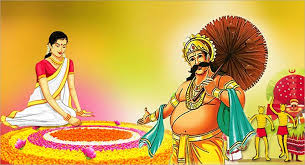

ONAM

Onam is an annual Hindu festival celebrated in southern Indian state of Kerala.
Onam celebrations include Vallam Kali (boat races), Pulikali (tiger dances),
Pookkalam (flower Rangoli), Onathappan (worship), Onam Kali, Tug of War,
Thumbi Thullal (women's dance), Kummattikali (mask dance), Onathallu (martial arts),
Onavillu (music), Kazhchakkula (plantain offerings), Onapottan (costumes),
Atthachamayam (folk songs and dance), and other celebrations.
It is the New Year day for Malayalis.